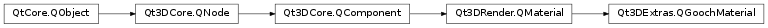

Qt3DExtras.QGoochMaterial¶
Synopsis¶
Functions¶
Slots¶
- def
setAlpha(alpha) - def
setBeta(beta) - def
setCool(cool) - def
setDiffuse(diffuse) - def
setShininess(shininess) - def
setSpecular(specular) - def
setWarm(warm)
Signals¶
- def
alphaChanged(alpha) - def
betaChanged(beta) - def
coolChanged(cool) - def
diffuseChanged(diffuse) - def
shininessChanged(shininess) - def
specularChanged(specular) - def
warmChanged(warm)
Detailed Description¶
The
QGoochMaterialprovides a material that implements the Gooch shading model, popular in CAD and CAM applications.The Gooch lighting model uses both color and brightness to help show the curvature of 3D surfaces. This is often better than models such as Phong that rely purely upon changes in brightness. In situations such as in CAD and CAM applications where photorealism is not a goal, the Gooch shading model in conjunction with some kind of silhouette edge inking is a popular solution.
The Gooch lighting model is explained fully in the original Gooch paper . The Gooch model mixes a diffuse object color with a user-provided cool color and warm color to produce the end points of a color ramp that is used to shade the object based upon the cosine of the angle between the vector from the fragment to the light source and the fragment’s normal vector. Optionally, a specular highlight can be added on top. The relative contributions to the cool and warm colors by the diffuse color are controlled by the alpha and beta properties respecitvely.
This material uses an effect with a single render pass approach and performs per fragment lighting. Techniques are provided for OpenGL 2, OpenGL 3 or above as well as OpenGL ES 2.
-
class
PySide2.Qt3DExtras.Qt3DExtras.QGoochMaterial([parent=nullptr])¶ Parameters: parent – PySide2.Qt3DCore.Qt3DCore::QNodeConstructs a new
QGoochMaterialinstance with parent objectparent.
-
PySide2.Qt3DExtras.Qt3DExtras.QGoochMaterial.alpha()¶ Return type: PySide2.QtCore.floatSee also
PySide2.Qt3DExtras.Qt3DExtras::QGoochMaterial.setAlpha()
-
PySide2.Qt3DExtras.Qt3DExtras.QGoochMaterial.alphaChanged(alpha)¶ Parameters: alpha – PySide2.QtCore.float
-
PySide2.Qt3DExtras.Qt3DExtras.QGoochMaterial.beta()¶ Return type: PySide2.QtCore.floatSee also
PySide2.Qt3DExtras.Qt3DExtras::QGoochMaterial.setBeta()
-
PySide2.Qt3DExtras.Qt3DExtras.QGoochMaterial.betaChanged(beta)¶ Parameters: beta – PySide2.QtCore.float
-
PySide2.Qt3DExtras.Qt3DExtras.QGoochMaterial.cool()¶ Return type: PySide2.QtGui.QColorSee also
PySide2.Qt3DExtras.Qt3DExtras::QGoochMaterial.setCool()
-
PySide2.Qt3DExtras.Qt3DExtras.QGoochMaterial.coolChanged(cool)¶ Parameters: cool – PySide2.QtGui.QColor
-
PySide2.Qt3DExtras.Qt3DExtras.QGoochMaterial.diffuse()¶ Return type: PySide2.QtGui.QColorSee also
PySide2.Qt3DExtras.Qt3DExtras::QGoochMaterial.setDiffuse()
-
PySide2.Qt3DExtras.Qt3DExtras.QGoochMaterial.diffuseChanged(diffuse)¶ Parameters: diffuse – PySide2.QtGui.QColor
-
PySide2.Qt3DExtras.Qt3DExtras.QGoochMaterial.setAlpha(alpha)¶ Parameters: alpha – PySide2.QtCore.floatSee also
PySide2.Qt3DExtras.Qt3DExtras::QGoochMaterial.alpha()
-
PySide2.Qt3DExtras.Qt3DExtras.QGoochMaterial.setBeta(beta)¶ Parameters: beta – PySide2.QtCore.floatSee also
PySide2.Qt3DExtras.Qt3DExtras::QGoochMaterial.beta()
-
PySide2.Qt3DExtras.Qt3DExtras.QGoochMaterial.setCool(cool)¶ Parameters: cool – PySide2.QtGui.QColorSee also
PySide2.Qt3DExtras.Qt3DExtras::QGoochMaterial.cool()
-
PySide2.Qt3DExtras.Qt3DExtras.QGoochMaterial.setDiffuse(diffuse)¶ Parameters: diffuse – PySide2.QtGui.QColorSee also
PySide2.Qt3DExtras.Qt3DExtras::QGoochMaterial.diffuse()
-
PySide2.Qt3DExtras.Qt3DExtras.QGoochMaterial.setShininess(shininess)¶ Parameters: shininess – PySide2.QtCore.floatSee also
PySide2.Qt3DExtras.Qt3DExtras::QGoochMaterial.shininess()
-
PySide2.Qt3DExtras.Qt3DExtras.QGoochMaterial.setSpecular(specular)¶ Parameters: specular – PySide2.QtGui.QColorSee also
PySide2.Qt3DExtras.Qt3DExtras::QGoochMaterial.specular()
-
PySide2.Qt3DExtras.Qt3DExtras.QGoochMaterial.setWarm(warm)¶ Parameters: warm – PySide2.QtGui.QColorSee also
PySide2.Qt3DExtras.Qt3DExtras::QGoochMaterial.warm()
-
PySide2.Qt3DExtras.Qt3DExtras.QGoochMaterial.shininess()¶ Return type: PySide2.QtCore.floatSee also
PySide2.Qt3DExtras.Qt3DExtras::QGoochMaterial.setShininess()
-
PySide2.Qt3DExtras.Qt3DExtras.QGoochMaterial.shininessChanged(shininess)¶ Parameters: shininess – PySide2.QtCore.float
-
PySide2.Qt3DExtras.Qt3DExtras.QGoochMaterial.specular()¶ Return type: PySide2.QtGui.QColorSee also
PySide2.Qt3DExtras.Qt3DExtras::QGoochMaterial.setSpecular()
-
PySide2.Qt3DExtras.Qt3DExtras.QGoochMaterial.specularChanged(specular)¶ Parameters: specular – PySide2.QtGui.QColor
-
PySide2.Qt3DExtras.Qt3DExtras.QGoochMaterial.warm()¶ Return type: PySide2.QtGui.QColorSee also
PySide2.Qt3DExtras.Qt3DExtras::QGoochMaterial.setWarm()
-
PySide2.Qt3DExtras.Qt3DExtras.QGoochMaterial.warmChanged(warm)¶ Parameters: warm – PySide2.QtGui.QColor
© 2018 The Qt Company Ltd. Documentation contributions included herein are the copyrights of their respective owners. The documentation provided herein is licensed under the terms of the GNU Free Documentation License version 1.3 as published by the Free Software Foundation. Qt and respective logos are trademarks of The Qt Company Ltd. in Finland and/or other countries worldwide. All other trademarks are property of their respective owners.